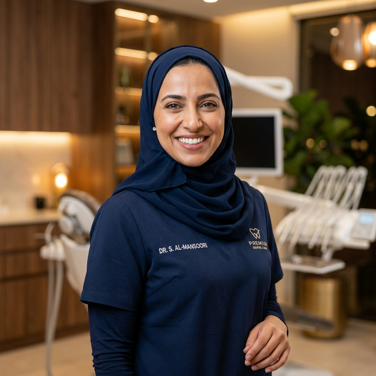
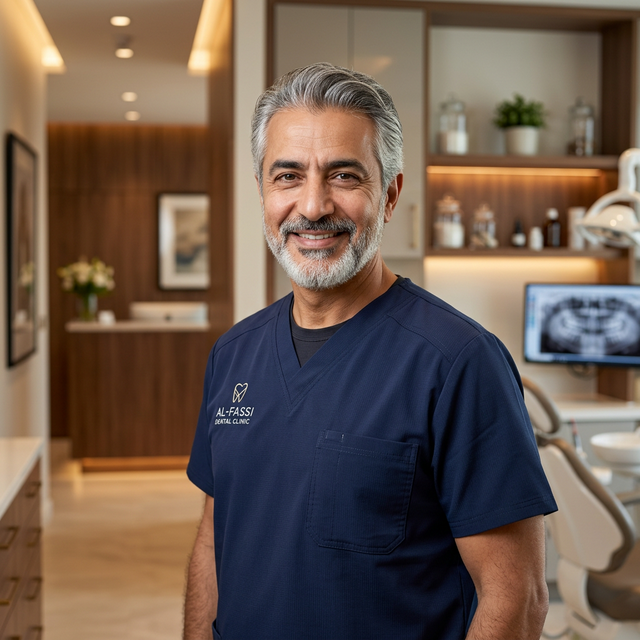
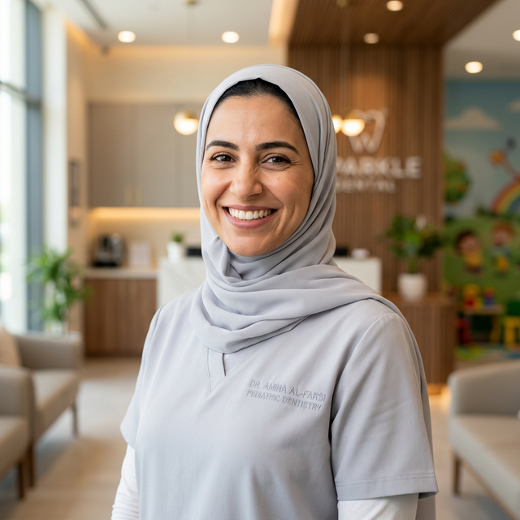

أطباء تثق بهم
لابتسامة تدوم
فريقنا من أمهر أطباء الأسنان في الرياض — خريجو أفضل الجامعات في بريطانيا وأمريكا وألمانيا، بخبرة مشتركة تتجاوز ٨٠ عاماً وأكثر من ١٠,٠٠٠ حالة ناجحة. كل طبيب لدينا متخصص في مجاله ومحترف في التعامل الإنساني.
فريق استثنائي
ما يميز أطباء بيرل سمايل
نؤمن بأن الابتسامة المثالية تبدأ من الطبيب الاستثنائي. فريقنا لا يمتلك فقط المهارة الطبية العالية، بل يجمع بين الفن والعلم والتعاطف الإنساني لتقديم تجربة علاج تفوق التوقعات.
احجز استشارتك الآنتعليم عالمي
جميع أطباؤنا خريجو أفضل الجامعات والمراكز الطبية في بريطانيا، أمريكا، ألمانيا، والمملكة. حاصلون على درجات الماجستير والزمالات والبورد.
اعتمادات دولية
أعضاء في الجمعية الأمريكية لطب الأسنان ADA، الجمعية البريطانية لتقويم الأسنان، الأكاديمية الأمريكية لزراعة الأسنان، والهيئة السعودية.
تدريب مستمر
يحضر أطباؤنا سنوياً أكثر من ١٠ مؤتمرات وورش عمل دولية في أحدث تقنيات وأساليب طب الأسنان لضمان تقديم أفضل رعاية ممكنة.
نهج إنساني
نختار أطباءنا ليس فقط بناءً على كفاءتهم العلمية، بل أيضاً بناءً على قدرتهم على التواصل مع المرضى بلطف وصبر وتفهّم.
تعرّف على أطبائنا
نخبة من المتخصصين في خدمتك
اختر طبيبك واحجز موعدك مباشرة — أو دعنا نختار لك الطبيب الأنسب لحالتك

د. أحمد الراشدي
استشاري زراعة الأسنان وجراحة الفم
أكثر من ١٥ عاماً من الخبرة في زراعة الأسنان وجراحة الفم والفكين. أجرى أكثر من ٣,٠٠٠ عملية زراعة ناجحة بنسبة نجاح تتجاوز ٩٨٪. يُعرف بين مرضاه بدقته المتناهية وأسلوبه الهادئ المُطمئن الذي يجعل حتى المرضى الأكثر قلقاً يشعرون بالراحة والأمان.
المؤهلات والاعتمادات:
- زمالة الكلية الملكية البريطانية لجراحي الأسنان — لندن
- ماجستير زراعة الأسنان — جامعة مانشستر، بريطانيا
- بكالوريوس طب وجراحة الفم — جامعة الملك سعود

د. فاطمة الحسن
أخصائية تقويم الأسنان والفكين
متخصصة في تقويم الأسنان بأحدث التقنيات الرقمية. خبرة ١٠ سنوات في تصحيح مشاكل إطباق الأسنان والفكين للبالغين والأطفال. معتمدة كمقدم Invisalign من المستوى الماسي — وهو أعلى تصنيف يُمنح لأخصائيي التقويم. تؤمن بأن كل مريض يستحق ابتسامة مستقيمة وجميلة بأقل فترة علاج ممكنة.
المؤهلات والاعتمادات:
- ماجستير تقويم الأسنان — جامعة كوين ماري، لندن
- مقدم Invisalign معتمد — المستوى الماسي
- عضو الجمعية البريطانية لتقويم الأسنان

د. خالد المنصور
استشاري تجميل الأسنان والفينير
فنان الابتسامات — هكذا يصفه مرضاه. أكثر من ١٢ عاماً من التخصص في تجميل الأسنان وتصميم الابتسامات. صمّم أكثر من ٢,٠٠٠ ابتسامة هوليوود ناجحة. يجمع بين الحس الفني والدقة العلمية لتصميم ابتسامات طبيعية مثالية تناسب ملامح كل مريض بشكل فريد.
المؤهلات والاعتمادات:
- زمالة تجميل الأسنان — الأكاديمية الأمريكية لتجميل الأسنان AACD
- دبلوم تصميم الابتسامة الرقمي — DSD، البرازيل
- بكالوريوس طب الأسنان — جامعة الملك عبدالعزيز

د. نورة العتيبي
أخصائية طب أسنان الأطفال والتخدير الواعي
الطبيبة المفضلة للأطفال — تتميز بقدرتها الفريدة على تحويل زيارة طبيب الأسنان إلى مغامرة ممتعة للصغار. متخصصة في التعامل مع الأطفال الذين يعانون من رهاب الأسنان. تستخدم تقنيات سلوكية متقدمة وأسلوب التخدير الواعي عند الحاجة لضمان تجربة خالية من الخوف والألم لطفلك.
المؤهلات والاعتمادات:
- ماجستير طب أسنان الأطفال — جامعة ليدز، بريطانيا
- شهادة التخدير الواعي للأطفال — الكلية الملكية البريطانية
- عضو الجمعية الأمريكية لطب أسنان الأطفال AAPD
لست متأكداً من
الطبيب المناسب؟
نتفهم أن اختيار طبيب الأسنان قرار مهم. أخبرنا عن حالتك وسيرشدك فريقنا بشكل شخصي لأفضل طبيب بناءً على تخصصه وخبرته.
تواصل معنا
راسلنا عبر واتساب أو اتصل بنا وأخبرنا عن شكواك الرئيسية في جملة واحدة
تشخيص مخصص
استشاريونا يقيّمون حالتك بدقة ويحددون الطبيب الأمثل الذي يتخصص في وضعك تحديداً
ابتسامتك تبدأ
احجز موعدك وابدأ رحلتك — الاستشارة الأولى مجانية وستغادر بخطة علاج واضحة
ابتسامتك في أيدٍ أمينة
فريقنا جاهز لاستقبالك. احجز موعدك مع طبيبك المفضل اليوم واحصل على استشارة مجانية شاملة مع خطة علاج مخصصة.